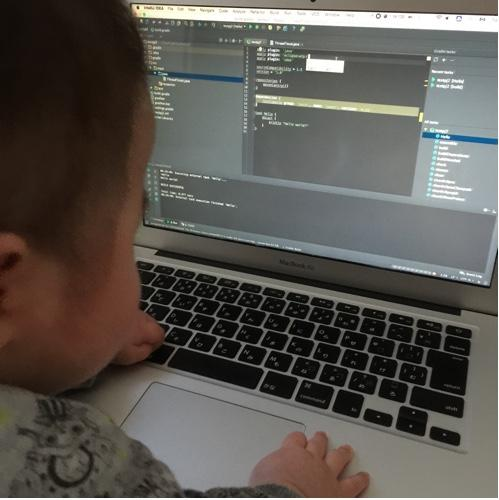
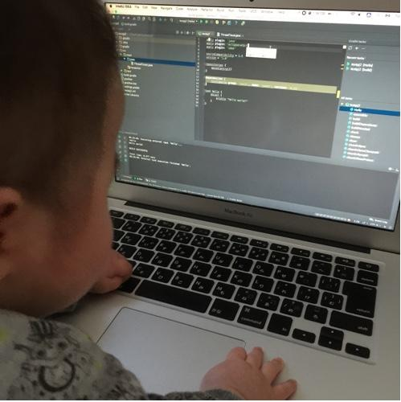
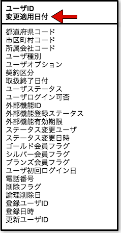
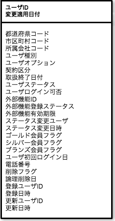
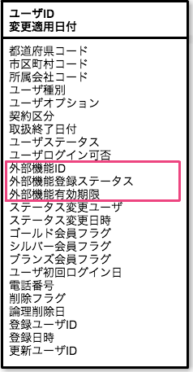
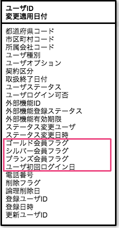
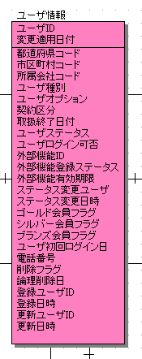
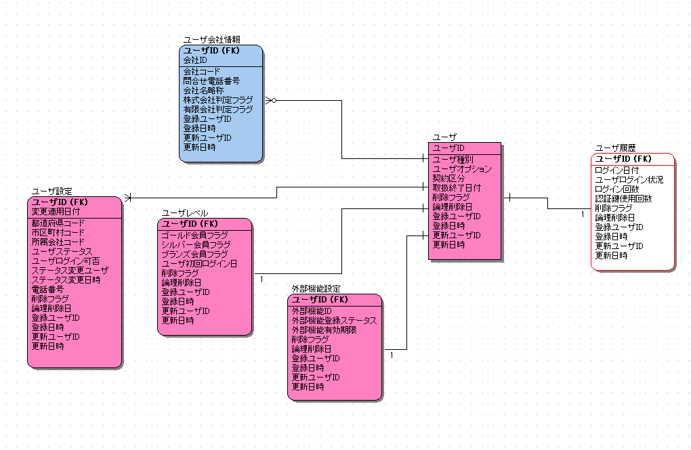
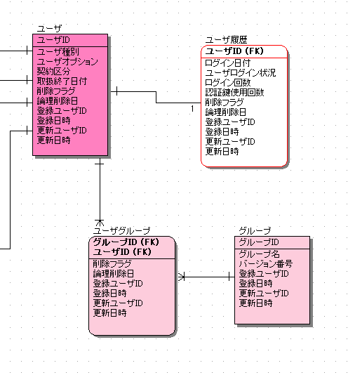
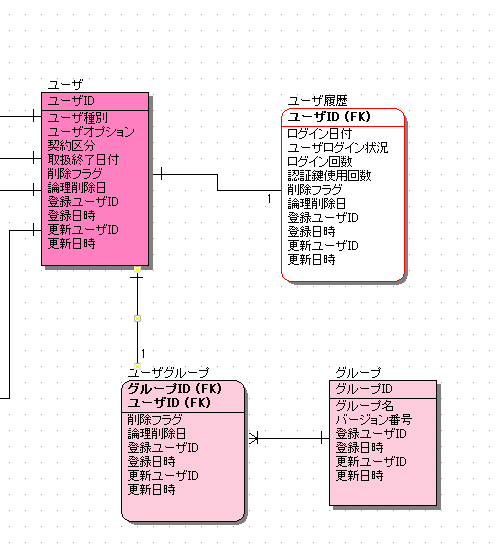

初めてデータモデル
設計と
向き合ってみた
※スペースですすむ！バックスペースでもどる！こんにちは！
|
てんてんさんがチームにアーキテクトして参入
･:*+.\\(( °ω° ))/.:+ 

てんてんさんがパートナーさんから相談をうける
- パートナーさん「データの検索条件が複雑になっちゃう」
- てんてんさん「データモデル設計を見てみる」
- しょぼちむ「|дﾟ)ﾁﾗｯ」
- てんてんさん「これってFKとか設定してないの？」
- しょぼちむ「( ﾟдﾟ)ﾊｯ!!」
- てんてんさん「データの整合性チェックどうしてるの？」
- しょぼちむ「( ﾟдﾟ)ﾊｯ!!」
※業務で使用してるER図ではありません。
余裕余裕！！

子テーブルのPKが増えた(・_・)
|  |
そもそもなんでPKに変更適用日時なるものが
入っているかというと |
- ユーザ情報は画面から変更したい
- 変更した設定をいつから適用するか決めたい
- 過去にどんな設定だったのかを残したい
- ※いくつかの項目は登録以降は変更しない
|  |
親にしようとしていたテーブルは
マスタで設定変更履歴で設定変更予約だった。 |
|  |
さらにテーブルの項目に見直しをかけていくと、
|
|  |
さらにテーブルの項目に見直しをかけていくと、
|
|
このままだと
|


- ひとつひとつのテーブルがシンプルになった！
- 各業務で、余計な項目をとらなくてもよくなった！
- 不変な項目と変更可能な項目がわかりやすくなった！

つけられた
･:*+.\\(( °ω° ))/.:+
- それぞれの関係が明確になった！
- 関係性がないのに線が引いてあったのを検知した！
Before
After
それぞれのエンティティが
何対何の関係になっているのかを考えることで
不明確になっていた要件を
検知することができた！！
 
最終的に
- ちゃんとデータの整合性を保つ仕組みがある(FK)
- 各エンティティ同士の関係性もパッと確認することができる
- それぞれの項目の役割ごとにテーブルがわかれている
くやしかったこと
- 自分の知識がなくて、ただの線に違和感をもてなかった
- 外部設計工程が終わってからの修正だったのでガッツリ修正はできなかった
よかったこと
- データモデル設計の大切さを知ることができた
- データモデル修正で色々相談していたときに「遅延評価」とか、いままで知らなかったことを知ることができた
- この勉強会をひらけた！！
意識を改めなきゃいけないこと
- DBAは雑用なんかじゃない。大切なお仕事だった。
- (本当にごめんなさい)